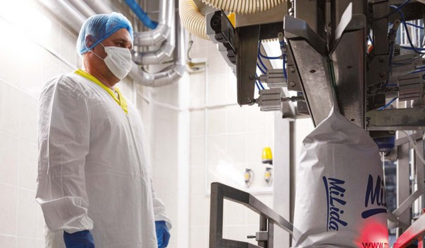

ОАО «Лидский молочно-консервный комбинат
Главная задача
производить продукты высокого качества с уникальным обслуживанием клиентов и расти как фаворит на рынке молочной промышленности.
Производство
Производственный цикл предприятия обеспечивает функционирование
четырех основных цехов, которые связаны между собой единым технологическим процессом – это цельномолочный
и консервный цеха, цех сухого обезжиренного молока и цех сухих молочных продуктов. На территории ОАО «Лидский
молочно-консервный комбинат» действуют столовая, буфет, здравпункт, общежитие и библиотека – социальная
база предприятия постоянно развивается для создания максимально комфортных условий труда для каждого члена
коллектива.
В структуру "Ошмянский сыродельный завод" филиал ОАО
"Лидский молочно-консервный комбинат" входят два цеха: цех по производству твердых сыров и
маслоцех. Установленная в 2006 году современная линия по выпуску твердых сыров обеспечивает автоматический
цикл работы с применением компьютерного управления. Мощность завода по производству сыра составляет 15
тонн в сутки. Сегодня Ошмянский сырзавод выпускает более 40 видов сыров жирностью от 19 до 55 %.
